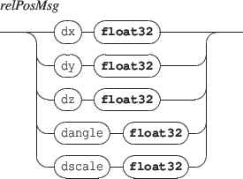

Next:
2.1.3 Components origin
Up:
2.1 Positioning
Previous:
2.1.1 Absolute positioning
Contents
Index
2.1.2 Relative positioning

dx
,
dy
,
dz
messages are similar to
x
,
y
,
z
but the parameters represent a displacement relative to the current target value.
dscale
is similar to
scale
but the parameters represents a scale multiplying factor.
E
XAMPLE
Relative displacement of an object:
/ITL/scene/myObject dx 0.1
Grame
-
INScore project